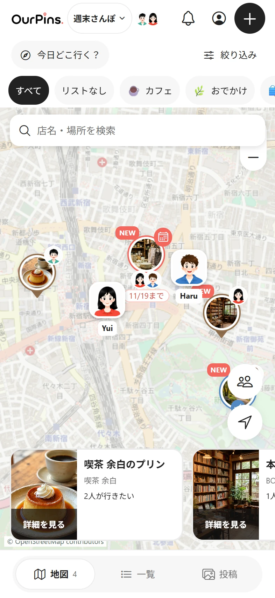
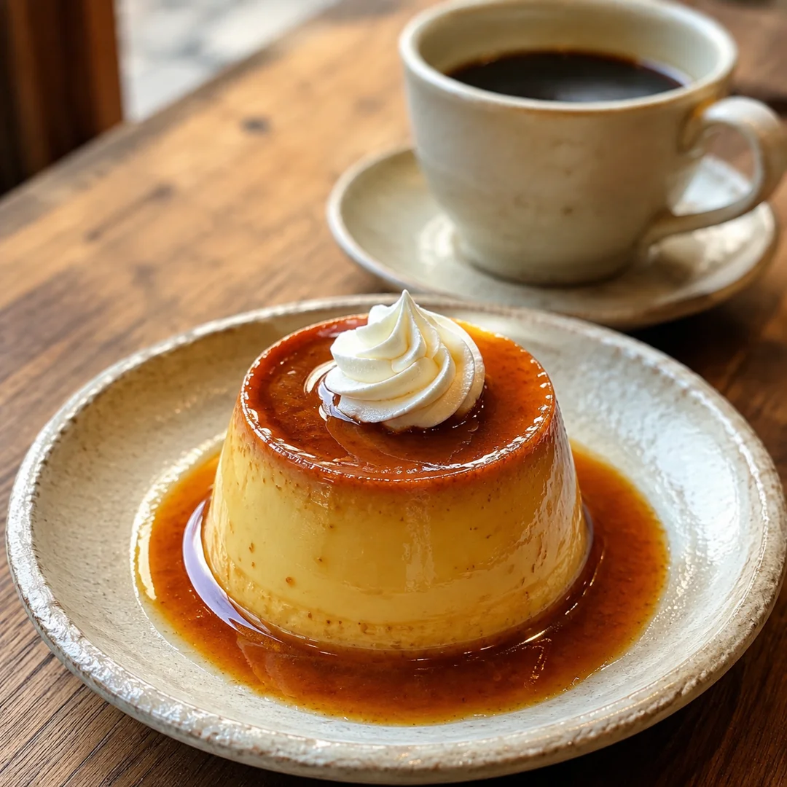
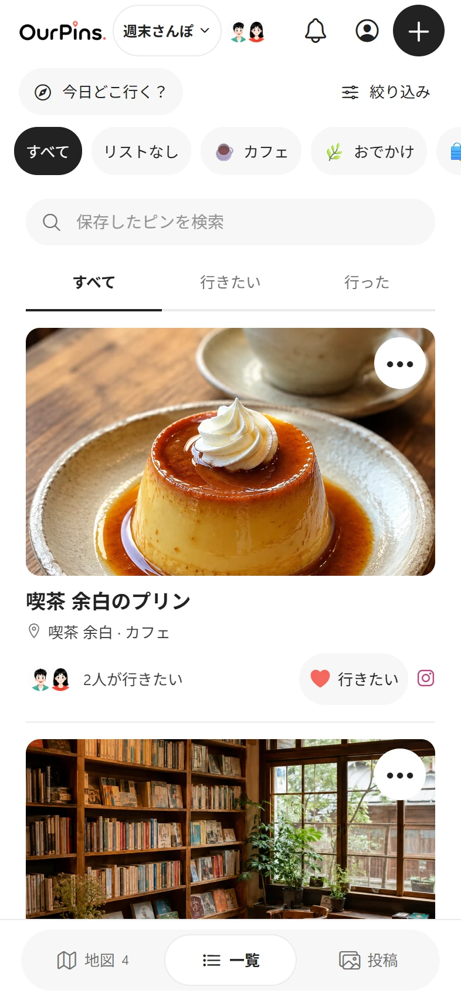
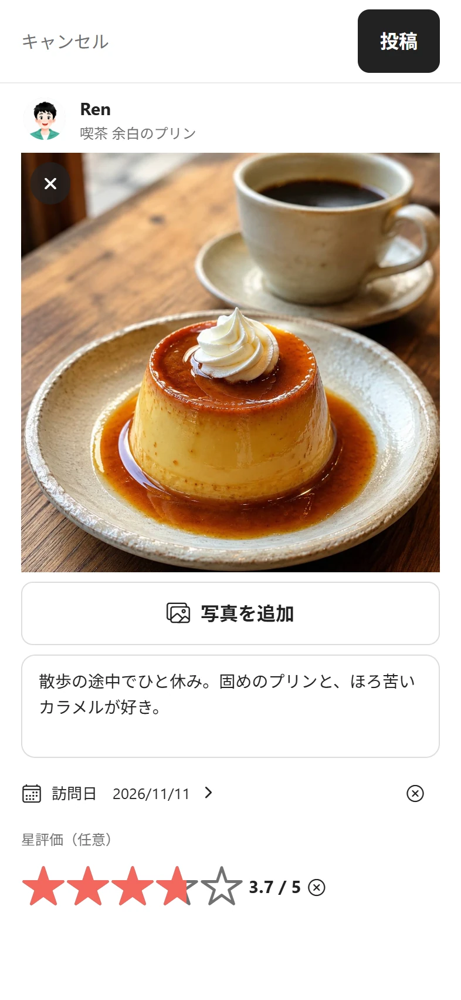

Map
See what’s nearby
Tap a photo pin to see the place. Switch lists to narrow the map to cafés, weekend stops or any collection your group makes.
A shared map for friends
That little café. The bookshop around the corner.
Put everyone’s favorite finds on one shared map.


Map
Tap a photo pin to see the place. Switch lists to narrow the map to cafés, weekend stops or any collection your group makes.

List
Compare saved places by photo. Tap the heart on your favorites and see which spots your friends want to visit too.

Posts
Choose a pin you visited and add the date, photos, a star rating or a note. Like and comment on visits shared by friends.
Screens show the Japanese app’s web preview with demo places.
Search by name or address, or choose a point on the map. Attach the Instagram post or YouTube video where you first spotted it.
Keep a personal map or invite friends to a group map. Organize pins into lists, from neighborhood cafés to bookshops for your next trip.
Location sharing starts off. Choose the friends you want to share with and start sharing to show them your location while you use the app.
OurPins is being prepared for release. Get in touch if you have a question about the app.
Contact us